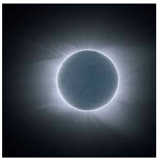

c
c
c
c
Os homens não permanecerão na Terra para sempre, mas em sua busca para a luz e espaço,
penetrará primeiro
timidamente além da atmosfera, e mais tarde conquistará para si todo o espaço perto do Sol.
- Konstantin E. Tsiolkovsky
"Tive um sonho, e na verdade não era um sonho: o Sol brilhante havia-se extinguido…"
Assim se expressou o poeta britânico
Lord Byron
há cerca de 200 anos, como que prenunciando para as gerações vindouras o destino do astro-rei.
O Sol é o objeto maior e mais importante em nosso sistema solar, contém aproximadamente 98% da massa total do sistema solar.
Para cobrir seu disco seria necessárias cento e nove Terras, e em seu interior caberiam 1,3 milhões de Terras. A camada externa visível do Sol é
chamada fotosfera, e tem uma temperatura de 6.000°C. Esta camada tem uma aparência turbulenta devido às erupções energéticas que lá ocorrem.
A energia solar é gerada no núcleo do Sol. À temperatura de 15.000.000° C, a pressão 340 bilhões de vezes a pressão atmosférica da Terra ao nível
do mar, são tão intensas que ocorrem reações nucleares.
Estas reações transformam quatro prótons ou núcleos de átomos de hidrogênio em uma partícula alfa, que é o núcleo de um átomo de hélio.
A partícula alfa é aproximadamente 0,7 % menos massiva do que quatro prótons. A diferença em massa é expelida como energia e carregada até a
superfície do Sol, através de um processo conhecido como convecção, e é liberada em forma de luz e calor. A energia gerada no interior do Sol
leva um milhão de anos para chegar à superfície. A cada segundo 700 milhões de toneladas de hidrogênio são convertidos em cinza de hélio. Durante este processo cinco milhões de toneladas de energia pura são liberados; portanto, com o passar do tempo, o Sol está se tornando mais leve.
O modelo representado na figura mostra as principais regiões do Sol. A fotosfera, com cerca de 330 km de espessura e temperatura de 5800 K é a camada visível do Sol. Logo abaixo da fotosfera se localiza a zona convectiva, se estendendo por cerca de 15% do raio solar. Abaixo dessa camada está a zona radiativa, onde a energia flui por radiação. O núcleo, com temperatura de cerca de 10 milhões de graus Kelvin é a região onde a energia é produzida, por reações termonucleares. A cromosfera é a camada da atmosfera solar logo acima da fotosfera. Ela tem cor avermelhada e é visível durante os eclipses solares, logo antes e após a totalidade. Estende-se por 10000 km acima da fotosfera e a temperatura cresce da base para o topo, tendo um valor médio de 15000 K. Ainda acima da cromosfera se encontra a coroa, também visível durante os eclipses totais. A coroa se estende por cerca de dois raios solares.
A FOTOSFERA :  A fotosfera do Sol tem a aparência da superfície de um líquido em ebulição, cheia de bolhas, ou grânulos. Este fenômeno é chamado de granulação
fotosférica. Os grânulos têm em torno de 1500 km de diâmetro, e duram cerca de 10 minutos cada.
Eles marcam os topos das colunas convectivas de gás quente, que se forma na zona convectiva, logo abaixo da fotosfera. As regiões escuras entre os
grânulos são regiões onde o gás mais frio e mais denso escorrem para baixo.
O fenômeno fotosférico mais notável é o das manchas solares, regiões irregulares que aparecem mais escuras do que a fotosfera circundante e que
muitas vezes podem ser observadas mesmo a olho nu, embora olhar diretamente para o Sol sem proteção adequada é perigoso. As manchas foram
registradas na China já no ano 28 a.C., mas seu estudo científico começou com o uso do telescópio, sendo observadas (por projeção da imagem do Sol)
por Galileu e Thomas Harriot (1560-1621) já em 1610, e por Johannes (1587-1616) e David Fabricius (1564-1617) e por Christoph Scheiner (1575-1650)
em 1611.
São constituídas de duas partes: a umbra, parte central mais escura, com temperaturas em torno de 3800 K, e a penumbra, região um pouco mais clara e
com estrutura radial em torno da umbra. As manchas solares tendem a se formar em grupos, e estão associadas a intensos campos magnéticos no Sol.
As manchas solares seguem um ciclo de 11 anos em que o número de manchas varia entre máximos e mínimos. (Cortesia NASA)
A fotosfera do Sol tem a aparência da superfície de um líquido em ebulição, cheia de bolhas, ou grânulos. Este fenômeno é chamado de granulação
fotosférica. Os grânulos têm em torno de 1500 km de diâmetro, e duram cerca de 10 minutos cada.
Eles marcam os topos das colunas convectivas de gás quente, que se forma na zona convectiva, logo abaixo da fotosfera. As regiões escuras entre os
grânulos são regiões onde o gás mais frio e mais denso escorrem para baixo.
O fenômeno fotosférico mais notável é o das manchas solares, regiões irregulares que aparecem mais escuras do que a fotosfera circundante e que
muitas vezes podem ser observadas mesmo a olho nu, embora olhar diretamente para o Sol sem proteção adequada é perigoso. As manchas foram
registradas na China já no ano 28 a.C., mas seu estudo científico começou com o uso do telescópio, sendo observadas (por projeção da imagem do Sol)
por Galileu e Thomas Harriot (1560-1621) já em 1610, e por Johannes (1587-1616) e David Fabricius (1564-1617) e por Christoph Scheiner (1575-1650)
em 1611.
São constituídas de duas partes: a umbra, parte central mais escura, com temperaturas em torno de 3800 K, e a penumbra, região um pouco mais clara e
com estrutura radial em torno da umbra. As manchas solares tendem a se formar em grupos, e estão associadas a intensos campos magnéticos no Sol.
As manchas solares seguem um ciclo de 11 anos em que o número de manchas varia entre máximos e mínimos. (Cortesia NASA)
A CROMOSFERA : A cromosfera do Sol normalmente não é visível,
porque sua radiação é muito mais fraca do que a da fotosfera. Ela pode ser observada, no entanto, durante os eclipses, quando a Lua esconde o disco da
fotosfera.
Veremos, o Sol tem
um espectro contínuo com linhas escuras (de absorção). Esse espectro é o da fotosfera. No entanto, olhando a borda do Sol com um espectroscópio, durante
um eclipse, temos a oportunidade de ver por alguns instantes o espectro da cromosfera, feito de linhas brilhantes, que mostram que a cromosfera é
constituída de gases quentes que emitem luz na forma de linhas de emissão.
Essas linhas são difíceis de serem observadas contra a luz brilhante da fotosfera, por isso não as vemos no espectro solar normal.
A temperatura na cromosfera varia de 4300 K na base a mais de 40000 K a 2500 km de altura. Esse aquecimento da cromosfera deve ter uma fonte de energia
que não são os fótons produzidos no interior do Sol, pois se a energia fosse gerada por fótons a cromosfera deveria ser mais fria do que fotosfera, então
mais quente. Atualmente se pensa que a fonte de energia são campos magnéticos variáveis formados na fotosfera e transportados para a coroa por correntes
elétrica, deixando parte de sua energia na cromosfera. (Cortesia NASA)
A COROA : A cromosfera gradualmente se funde na coroa, a camada
mais externa e mais rarefeita da atmosfera do Sol. A coroa poderá ser melhor observada durante
eclipses, pois apesar de ter um brilho equivalente ao da lua cheia, ela fica obscurecida quando a fotosfera é visível. O espectro da coroa mostra
linhas muito brilhantes que, até 1940, não eram conhecidas. Atualmente sabemos que elas são produzidas por átomos de ferro, níquel, neônio e cálcio
altamente ionizados, e não por algum elemento estranho, como anteriormente foi pensado. O fato de existirem esses elementos várias vezes ionizados
na coroa implica que sua temperatura deve ser muito alta, pois é necessária muita energia para arrancar muitos elétrons de um átomo.
A coroa deve ter uma temperatura em torno de um milhão de graus Kelvin.
A elevação da temperatura na coroa deve ter origem no mesmo processo físico que aquece a cromosfera: transporte de energia por correntes elétricas
induzidas por campos magnéticos variáveis. Da coroa emana o vento solar, um fluxo contínuo de partículas emitidas da coroa que acarretam uma perda
de massa por parte do sol.
O vento solar que atinge a Terra é capturado pelo campo magnético, formando o cinturão de Van Allen, na magnetosfera terrestre. Este cinturão,
descoberto pelo físico americano James Alfred Van Allen (1914-) em 1958, só permite que as partículas carregadas entrem na atmosfera da Terra pelos
pólos, causando as auroras, fenômenos luminosos onde os átomos de oxigênio são excitados e desexcitados. Além das partículas do vento solar, existem
grandes ejeções de massa associadas às proeminências, que quando atingem a Terra causam danos às redes elétricas e aos satélites.(Cortesia NASA)
PROEMINENCIAS DO SOL :  Imagem obtida da estação espacial Skylab da NASA. Mostra um dos mais espetaculares flares solares já vistos, impulsionado por forças magnéticas, se
elevando do Sol. Ela abrange mais de 588.000 km da superfície solar. Nesta fotografia os pólos solares são distinguíveis pela relativa ausência de
supergranulação, e um tom mais escuro do que as porções centrais do disco.(Cortesia ESA/NASA)
Imagem obtida da estação espacial Skylab da NASA. Mostra um dos mais espetaculares flares solares já vistos, impulsionado por forças magnéticas, se
elevando do Sol. Ela abrange mais de 588.000 km da superfície solar. Nesta fotografia os pólos solares são distinguíveis pela relativa ausência de
supergranulação, e um tom mais escuro do que as porções centrais do disco.(Cortesia ESA/NASA)
FLARES SOLARES : Imagem da coroa solar obtida pelo instrumento LASCO na nave espacial SOHO. Mostra a faixa interior no equador solar, onde se origina e é acelerado pelo vento solar de baixa latitude. Acima das regiões polares, podem-se ver os flares solares afastando-se até o limite do campo visível. O campo visível desta imagem da coroa estende-se a 8,4 milhões de quilômetros da heliosfera interior. (Cortesia ESA/NASA)
ORIGENS DO VENTO SOLAR :  "Plumas" de gás quente fluindo para fora da atmosfera do Sol podem
ser uma das fontes do "vento" solar de partículas carregadas. Estas imagens foram obtidas, pela espaçonave SOHO, mostram
(figura de cima) uma imagem ultravioleta de uma pluma com 1 milhão de graus da mesma região e (figura de baixo) uma
imagem ultravioleta de uma região sem atividades da atmosfera solar próxima da superfície. (Cortesia ESA/NASA)
"Plumas" de gás quente fluindo para fora da atmosfera do Sol podem
ser uma das fontes do "vento" solar de partículas carregadas. Estas imagens foram obtidas, pela espaçonave SOHO, mostram
(figura de cima) uma imagem ultravioleta de uma pluma com 1 milhão de graus da mesma região e (figura de baixo) uma
imagem ultravioleta de uma região sem atividades da atmosfera solar próxima da superfície. (Cortesia ESA/NASA)
O SOL ERUPTIVO : Esta sequência de imagens do Sol em luz ultravioleta foi obtida pela espaçonave SOHO - Observatório Hemisférico Solar, de um ponto único de gravidade neutra a 1,6 milhões de km da Terra. Vê-se uma "proeminência eruptiva" ou bola de gás a uma temperatura de 60.000°C, e 130.000 km de extensão, foi ejetada com uma velocidade acima de 24.000 km/h. A bola gasosa aparece à esquerda em cada imagem. Estas erupções ocorrem quando uma quantidade significativa de plasma frio e denso ou gás ionizado escapa do campo magnético de baixo nível da atmosfera do Sol. Erupções deste tipo podem produzir grandes distúrbios próximo da Terra, afetando comunicações, sistemas de navegação e até redes de luz elétrica (Cortesia ESA/NASA)
IMAGENS EM RAIOS-X :  Imagem do Sol em raios-x obtida em 1994. As regiões brilhantes são fontes de emissão de raios-x mais intensas.
(Cortesia Calvin J. Hamilton, e Yohkoh)
Imagem do Sol em raios-x obtida em 1994. As regiões brilhantes são fontes de emissão de raios-x mais intensas.
(Cortesia Calvin J. Hamilton, e Yohkoh)
DISCO SOLAR EM H-ALPHA :  Olhando para a imagem é possível notar um contraste entre o centro (mais brilhante) e o bordo (mais escuro). Este efeito é
designado por Escurecimento do Limbo e deve-se ao fato de no centro do disco a temperaturas é próximo a 6.000 K,
enquanto que nas bordas vemos camadas mais superficiais que possuem temperaturas mais baixas (apriximadamente 4.500 K).
(Cortesia National Solar Observatory/Sacramento Peak)
Olhando para a imagem é possível notar um contraste entre o centro (mais brilhante) e o bordo (mais escuro). Este efeito é
designado por Escurecimento do Limbo e deve-se ao fato de no centro do disco a temperaturas é próximo a 6.000 K,
enquanto que nas bordas vemos camadas mais superficiais que possuem temperaturas mais baixas (apriximadamente 4.500 K).
(Cortesia National Solar Observatory/Sacramento Peak)
CAMPOS MAGNÉTICOS SOLARES : Boa parte da fotosfera do Sol tem um campo magnético com uma intensidade de alguns gauss, enquanto que as regiões ativas, aquelas encontradas ao redor das manchas solares, podem ter campos magnéticos com uma intensidade que chega a milhares de gauss. Essa intensidade do campo magnético solar é medida hoje por sondas especializadas como a HMI e o SDO.(Cortesia GSFC NASA)
MANCHAS SOLARES : 
Manchas solares são fenômenos temporários na fotosfera do Sol, que aparecem como manchas mais escuras do que as áreas
circundantes.
Elas são regiões de temperatura superficial reduzida, causadas por concentrações de fluxo de campo magnético
que inibem a convecção. (Cortesia National Solar Observatory/Sacramento Peak)
ECLIPSES SOLARES : ECLIPSE SOLAR 1977 : O eclipse solar ocorreu em 12 de outubro de 1977, visível no Oceano Pacífico , Colômbia e Venezuela. (Cortesia HAO ) ECLIPSE SOLAR 1991: eclipse solar total de 11 de julho de 1991 visto da Baia Califórnia. Cortesia Steve Albers) ECLIPCE SOLAR 1994: o eclipse solar de 1994 de em 3 de Novembro de 1994.O eclipse começa a leste do oceano Pacífico, passa pelo sul do Peru, norte do Chile, partes da Argentina, Paraguai, atravessa o sul do Brasil e acaba ao sul do oceano Atlântico, próximo do continente africano. (Cortesia HAO )
TAPETE MAGNÉTICO :  A distribuição complexa de energia é misturada com polaridades magnéticas formando um "tapete " magnético sobre toda a
superfície do Sol. As voltas magnéticas estão conectadas a regiões de oposição de polaridade magnética, na coroa solar,
formando estruturas extensas. A coroa solar é uma região de gás quente, eletricamente carregado que flui da superfície do
Sol. A imagem mostra quantias diferentes de material a uma temperatura de cerca de 3.5 milhões de graus Celsius. Áreas
mais brancas representam materiais que estão e esta temperatura, áreas mais escuras representam temperaturas menores.
As manchas pretas e brancas representam concentrações de campo magnéticas com orientações opostas(polaridades). Estas
concentrações compõem o tapete "magnético solar" que acredita-se ser o responsável pelo aquecimento extremo da coroa.
Estes moldes em ferradura que se estendem por várias voltas sobre a superfície na coroa. Embora comparativamente pequenos
para o Sol, eles variam entre alguns mil até várias dezenas de milhares de km de comprimento; os menores ainda dariam uma
volta ao redor da Terra. Cada uma destas voltas possui tanta energia quanto uma grande hidroelétrica, como se a represa
de Itaipu pudesse gerar energia por mais de um milhão de anos. (Cortesia NASA)
A distribuição complexa de energia é misturada com polaridades magnéticas formando um "tapete " magnético sobre toda a
superfície do Sol. As voltas magnéticas estão conectadas a regiões de oposição de polaridade magnética, na coroa solar,
formando estruturas extensas. A coroa solar é uma região de gás quente, eletricamente carregado que flui da superfície do
Sol. A imagem mostra quantias diferentes de material a uma temperatura de cerca de 3.5 milhões de graus Celsius. Áreas
mais brancas representam materiais que estão e esta temperatura, áreas mais escuras representam temperaturas menores.
As manchas pretas e brancas representam concentrações de campo magnéticas com orientações opostas(polaridades). Estas
concentrações compõem o tapete "magnético solar" que acredita-se ser o responsável pelo aquecimento extremo da coroa.
Estes moldes em ferradura que se estendem por várias voltas sobre a superfície na coroa. Embora comparativamente pequenos
para o Sol, eles variam entre alguns mil até várias dezenas de milhares de km de comprimento; os menores ainda dariam uma
volta ao redor da Terra. Cada uma destas voltas possui tanta energia quanto uma grande hidroelétrica, como se a represa
de Itaipu pudesse gerar energia por mais de um milhão de anos. (Cortesia NASA)
Observações a olho nu do Sol irão resultar em cegueira. O uso impróprio de telescópios ou binóculos irá cegar muito mais rápido. Agora, uma vez dito isso, existem modos seguros e fáceis de observar com segurança o Sol. É possível descobrir importantes detalhes sobre o Sol por si mesmo. Observação incorreta do Sol pode cegar por causa da tremenda quantidade de luz visível e invisível que vem de sua superfície. Óculos escuros e outros filtros impróprios podem bloquear a luz visível mas não podem bloquear o suficiente a luz ultravioleta e a infravermelha, causando queimaduras na retina do olho. Olhar através de grossas nuvens ou com óculos de sol UV, que bloqueiam o ultravioleta é igualmente perigoso. Uma imagem projetada do Sol é, entretanto, perfeitamente segura para observação. Binóculos, com uma das frentes tampadas, podem ser usados para projetar uma imagem nítida do Sol em uma folha de papel branco. Procure fixar o binóculo em um local próprio preso firmemente com fita. Coloque um cartão de papelão de 20 por 25 centímetros, com um furo do mesmo diâmetro que a frente de uma das oculares do binóculo. Prenda-o firmemente com a fita, esse cartão irá provocar uma sombra no papel onde será projetada a imagem do Sol. Mire o binóculo girando-o para cima e para baixo, para trás e para frente, até que o Sol brilhe através dele. Nunca olhe pelo binóculo quando estiver apontado para qualquer lugar perto do Sol! Focalize a imagem do Sol no papel usando o botão de foco ou o nivelador. O tamanho da imagem pode ser alterado afastando ou aproximando o papel do binóculo. As manchas solares aparecem no disco do Sol. Uma mancha solar terá uma região central muito escura, chamada umbra (sombra). Ela é freqüentemente circundada por um halo menos escuro conhecido como penumbra. A umbra é escura por que é mais fria a cerca de 3.500°C que a região que a circunda cerca de 5.500°C As manchas mudam num período de vários dias. Rascunhar a aparência e localização detalhada das manchas solares em uma folha de papel nova por vários dias pode fornecer uma clara ilustração deste fato. Elas também se deslocam pelo Sol conforme o Sol gira em torno de seu eixo. Por que o Sol é fluido, ele não gira como um corpo rígido. Uma mancha próxima ao equador precisará de cerca de 25 dias para completar uma rotação. Uma mancha próxima ao pólo se houver alguma, vai precisar de um mês para completar a viagem. Colecionando os rascunhos feitos em um período de vários anos também irão revelar o ciclo de 11 anos das manchas solares. Nesse período o número de manchas vai do máximo ao mínimo, e de volta ao máximo. Como com qualquer experiência, siga os bons procedimentos científicos. Mantenha registros apropriados, certificando-se de que todos os papéis tenham data, hora e condições de observação apropriadas anotadas nas margens ou atrás dos desenhos. Leia mais sobre manchas solares e sua interessante natureza.
{kind=link}
{kind=link}
{kind=link}
{kind=link}